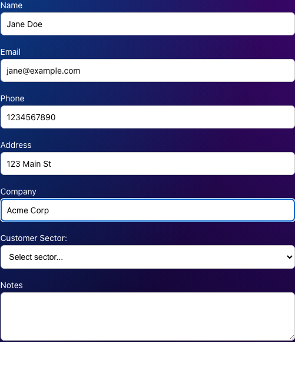
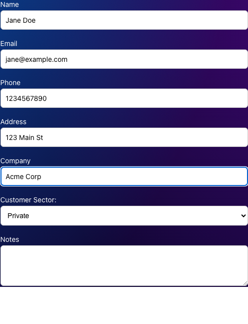
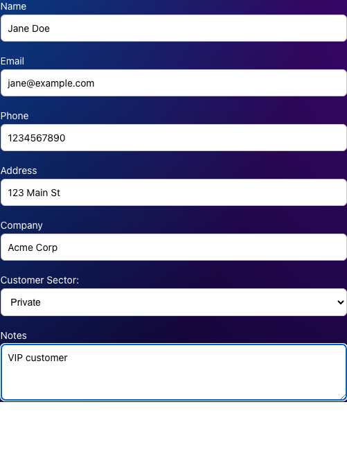
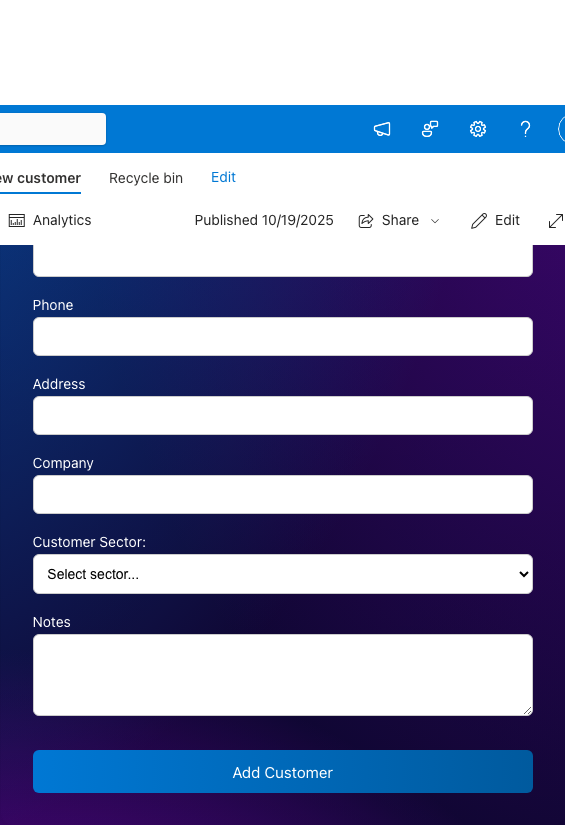
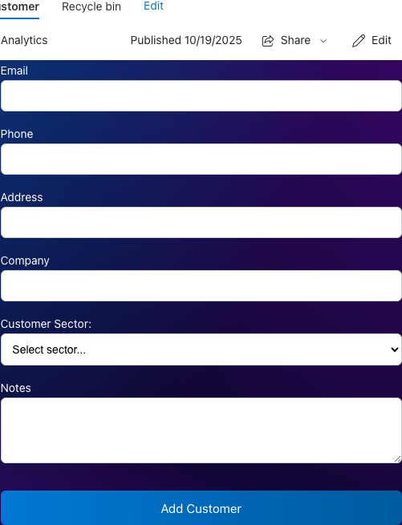

🔄 Main Workflow Snapshots
01-initial-form Chromium

02-form-filled-basic-fields Chromium

03-form-private-sector-selected Chromium

04-form-completed-ready-to-submit Chromium

05-form-success-notification Chromium

06-form-reset-after-submit Chromium
